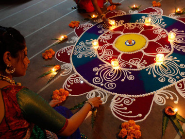
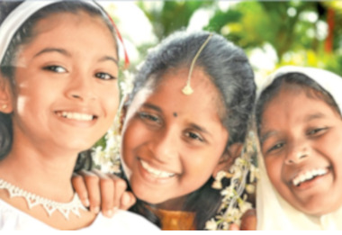
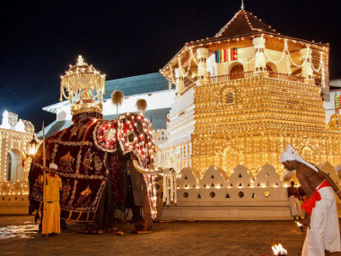
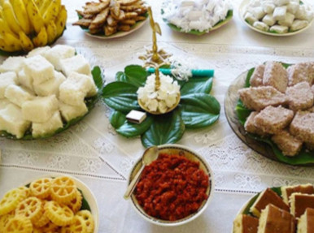
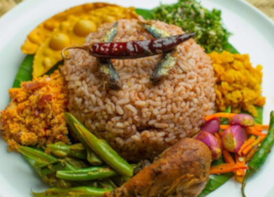

Arts and Crafts
Arts and crafts were a important aspect of sri Lankan trade back in that time and are heavily influenced by culture and heritage. These days these crafts are also called as "Souvenir" by both local and foreign travellers. These memontos can be purchased through colombo as well as outside.Some examples are:
- masks
- Handloom
- Dumbara weaves
- Making of traditional drums
.jpg) |
.jpg) |
.jpg) |
Masks
Sri Lankan masks are very strictly connected to it's historical background. Mostly seen in Sri lankan fork-lore used in rituals and rites. Also used in devil dances and drama performances.One main popular act is the 18 sannis. Ambalamgoda is the heart of Sri lanka mask making where shops can be seen eithetr side of the street. If you enter inside a shop you can see how the masks are hand carved and painted(timeout,2018)>
Culture
Ethnicity and Religion
|  |  |  |
Ethnicity can be regarded as one of the main key aspects to determine Sri Lanka culture. There are a number of ethnic groups residing in Sri Lanka. The Majority of them are Sinhalese and Tamils. Then there are Muslims who are further divided as Malays, Moors etc. Then burghers who were modern descendants of Portuguese, British and Dutch when Sri Lanka was a colony under them. Different ethnicities also speak different languages and some ethnic groups speak the same language more often. Another ethnic group is also available who are known as the "Vedda" community. They are the indigenous people of Sri Lanka who are still currently practicing primitive behavior(countrystudies.us, 2010)
Religion can be the other key element determining Sri Lankan culture.There are 4 main religions in sri lanka which are:
- Buddhism
- Hinduism
- Christianity
- Islamism
Food and Medicine
food and drink has been controlled by Ancient Sri lankan culture and yet still some of these food are the cuurent staple food of our country and is still consumed by the locals of our country.Rice and cuury is considered the most popular dish among Sri lankan people.It's a combination of mainly rice and some vegetable curries and meat too which makes it a very rich in terms of nutrition.The curries are bursting with unexplainable flavour because of the various spices used by Sri lankans such as Nutmeg,Cardomem(Enasahal) ,Clove(Karabunati) ,Goraka ,Corinader(Kottamalli) etc.Many of these spices are cultivated within the country. On festive seasons Sri lanka celebrates Sinhala and Tamil new year and sweets such as Kavum,Kokis,Aluwa and many sweet meats could be found
.jpeg) |
 |  |
Sri Lankan medicine has been mainly ayurweda.It is an ancient medicinal practice in which most of the medicinal practises are consuming antidotes and through massaging. Ayurwedic doctors do not perform incisions and surgeries. Many of these medicine and antidotes are made from local herbs.Ayurwedic practises are still very common in the rural areas of the country. It is also to be mentioned that Sri lankan food is also very high in medicinal value and yet in some families people drink Kottamalli on a regular basis. Due to this many Sri-lankas tend often to get sick and be a victim of cholestrol,High blood pressure and heart related conditions in which other countries exced at.
Geographical conditions
Physical Landscape
The Physcial landscape of Sri lanka differs from one part to another. The Central Region of Sri Lanka is filled with rugged rocky Mountains,Plateus,Waterfalls etc. Many of the Dams built by the ancient kings are also found in this part of region. Due to the high average rainfall for this region the region has a lot of forests and greeny vegetation. However the case for the coastal line is much more diiferent.The coast line a very low sea-level and is filled with golden Sand Beaches.
Weather and climate
Since Sri lanka resides near the equator it has a tropical cimate.It comtains wet and dry seasons. The coastal area has an average temperature of 82 f and the hilly areas to the centre experience ranges from 16-20 C. The dry arid areas reciece upto 900mm amd the central highlands reciece an average rainfall of 5000m. The coastal areas of sri lanka is very humid and very warm.(meteo.gov.lk,2019;worldtravelguide.net,2022)